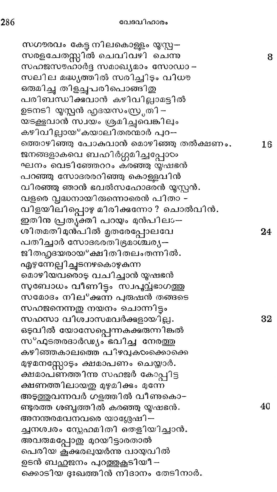
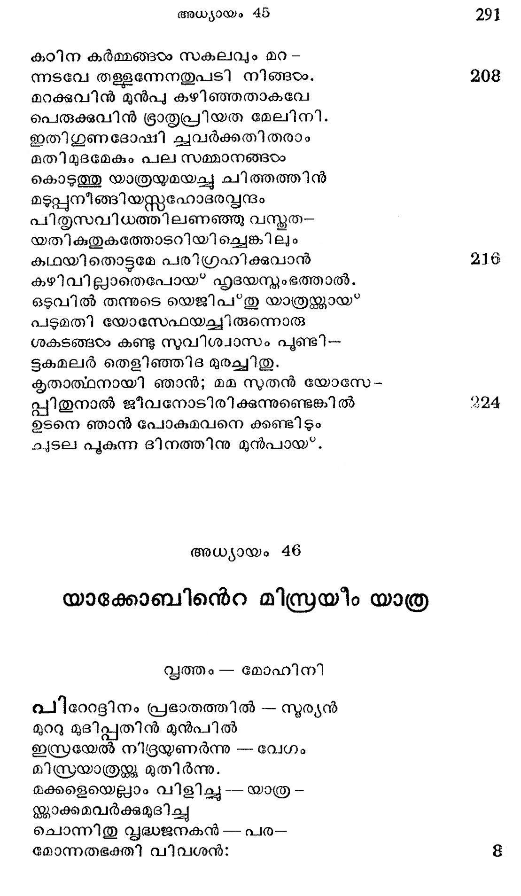

യഫഹൂദതന്നുടെ വിനയപൂര്ണ്ണവും
മഹിതചിന്തന ചയവികീ ര്ണ്ണവു ൦
ഗുരുജനഭക്ത്യാഭരാലദീര്ണ്ണവു ൦
പരിസ്പഡനതിയൊടു വിതീ ര്ണ്ണവും
രചനസമ്ടേവാല് സുവര്ണ്ണവുമായ*
വചനമാം ജംഭഫലരസം ജവാൽ
സഗരരവം കേട്ട നിലകൊള്ളം യൂസ്ക-
സരളചേതസ്സ്സില് ചെവിവഴി ചെന്നു
സഹജസഹാര്ട്ദ സമാഖ്യമാം സോഡാ -
സലില മദ്ധ്യത്തില് സരിച്ചിടും വിധ
ഒരുമിച്ച തിളച്ചുപരിപൊങ്ങിതു
പരിീിബന്ധിക്കുവാന് കഴിവില്ലാമടില്
ഉടനടി യൂസ്പന് ഹൃദയസംസ്രതി -
യടക്കൂവാന് സ്വയം ശ്രമിച്ചുവെങ്കിലും
കഴിവില്ലായ്കയാലിതരന്മാര് പുറ-
ത്തൊഴിഞ്ഞു പോകുവാന് മൊഴിഞ്ഞു തല്ക്ഷണം.
ജനങ്ങളാകവെ ബഹിദര്ഗ്ഗുമിച്ചപ്പോരം
ലനം വെടിഞ്ചേററം കരഞ്ഞു യൂഷഭന്
പറഞ്ഞു സോദരരറിഞ്ഞു കൊള്ളവിന്
വിരഞ്ഞു ഞാന് ഭവല്സഹോദരന് യൂസ്പന്.
വളരെ വൃദ്ധനായിരുന്നൊരെന് പിതാ -
വിളയിലിപ്പൊഴുമിരിക്കുന്നോ? ചൊല്വിന്.
ഇതിനു പ്രത്ൃയക്തി പറയും മുന്പില൦-
ശിതമതിമുന്പിൽല് മൃതരേപ്പോലവേ
പതിച്ചാര് സോദരരതിഭ്രമാശ്ചര്യ--
ജിതഹ്ുയദയരായ*ക്ഷിതിതലംതന്നില്.
എഴുന്നേല്ലിചുടനഴകൊഴുകുന്ന
മൊഴിയവരൊടു വചിച്ചാന് യൂഷഭന്
സുബോധം വീണിട്ടും സ്വപുവ്വഭാഗത്തു
സമോദം നില്ക്കുന്ന പുരുഷന് തങ്ങടെ
സഹജനെന്നതു നയനം ചൊന്നിട്ടം
സഹസാ വിശ്വാസമവര്ക്കുളായില്ല.
ഒടുവില് യോസ്േപ്പെന്നകക്കുരുന്നിങ്കല്
സ*ഫുടതരദാര്ഡ്്യം ഭവിച്ച നേരത്തു
കഴിഞ്ഞകാലത്തെ പിഴവുകയഠാംക്കൊക്കെ
മുഴുമനസ്സോടും ക്ഷമാപണം ചെയ്യാര്.
ക്ഷമാപണത്തിന്നു സഹജര് കോപ്പിട്ട
ക്ഷണത്തിലായതു മുഴുമിക്കും മുന്നേ
അടുത്തുവന്നവര് ഗളത്തില് വീണുകൊ-
ണ്ടുരത്ത ശബ്ദത്തില് കരഞ്ഞു യൂഷഭന്.
അനന്തരമവനവരെ യാദ്ദേഷി-
ചുനശ്വരം സ്നേഹമിതി തെളിയിച്ചാന്.
അവരുമപ്പോതു മുറയിട്ടാരതാല്
പെരിയ കൂക്കരലുയര്ന്നു വായുവില്
ഉടന് ബഹ്ഥാജനം പുറത്തുകൂടിയീ -
ക്കൊടിയ ദുഃഖത്തിന് നിദാനം തേടിനാര്.

മിടുമകൊണ്ടതു ഗ്രഹിച്ചു തങ്ങളം
സ*ഫുടമനുശോചിച്ചുടമയോടപ്പോഴം
പരിമൂദടുസ്നേഹലതാസുമം വിട-
നാരിയതേന്മഴ പൊഴിഞ്ഞിടുന്നതായ*.
ഇവരുടെ ബാഷ്*പപ്രവാഹത്തെ കണ്ടാര്
കവനകശേല്യം കലര്ന്ന മിസ്രയർ
കരച്ചിലിന് തിര വളരെ ദൂരത്തിൽ
പരത്തി ദുഃഖാബ്ദിയടിച്ചലകയാല്
ഇജിപ*തു ഭൂപനന്െറ സുവസ്ത്യം താനുമ--
ങ്ങനല്പമാം വിധം ചലിച്ചി താദ്ൃയമായ*.
ബഫഹുല ദുഃഖത്താല് വിജി ത്രായ* നിജ
സഹോദരവ്വന്ദം കരഞ്ഞു നില*ക്കവേ
കഠിന വേനലിന്നൊടവില് പെയ്യുന്ന
പടുമഴ പോലെയവരുടെ മനം
കുളിര്ത്തിടുമാറീ വചനവര്ഷണം
കഴിച്ചു യൂസ*പനാ മഭിനവ മേഘം.
കിമത്ഥം (ഭ്രാതാക്കളകന്നു നിലക്കുന്നു?
വിമര്ദ്ദഭീയെന്തിന്നുുത്തു വന്നിടിന്!
ഇവനിജിഷപ്ഠിലേ വിനേതാവെങ്കില
മവരജന് നിങ്ങടംക്കിതി ധരിക്കുവിന്.
ഭയങ്കരനായ ഹരിയുടെ മുന്പിന്
ഗജമെന്യേ പോതം ഭയപ്പെടുന്നുണ്ടോ ?
കഠോരനെങ്കിലും പിതാവിൻ കയ്യിലേ
കഠാര കണ്ടൊട്ടം ചുളഞ്ടിടാമക്കഠം.
അനാഗസ്റ്റാമെന്നേ ഭവാന്മാര് മിസ്രയ-
ക്ടിമയായ്* വിററ കഥ നിനച്ഛ മേൽ
വൃസനിക്കേണ്ടാരു മതിലഭേദ്യമാം
കരുതലൊന്നീശന് കരുതിനാന് മുന്പേ.
ജഗല്പ്പി താവി നെറ ക്രിയാവി ശേഷങ്ങയം
ജഗന്നിവാസികം ക്കറിവതാവതോ?
മധുരരമെന്നതു ഫലത്തില് കന്ക്കാകാം
സുദദഡം കയ്്യുതി മധുരവുമാകാം
വെളിച്ചമെന്നു നാം നിനയന്ക്കുമ്പോളതി -
ലൊളിച്ചു മേവുന്ന തിരുട്ടായ*വന്നിടാം.
സമസ്മനാഥന്െറ പരമോദ്ദേശങ്ങ--
ളമര്ത്യന്മാര് പോലുമറിയുവാന് പണി
മദീയവിക്രയം ഭവാന്മാര് ചെയ്യുമ്പോ-
ഉതുഗുണമാക്കി ചമച്ച സവ്വേശന്.
ഭയാനകമായ വറുതിയട്ടദിക്കില്
വരുന്നകാലത്തു പരീഹാരം ചെവ*വാന്
പരമപുരുഷന് കരുണയോടെന്നെ
ത്വരിതമിങ്ങോട്ടേ്ത്കയച്ചതാണോര്ത്താല്.
അതുവിചാരിക്കില് ത്രിദിവതാതനെ
നതിചെയ്യീടണമിളവെനേൃയ നമ്മഠം,
ഭവി മരുവിടും പി താവിനെക്കാള -
മവനത്രേ നമ്മെ ക്കരുതിക്കാപ്പതും.
വദിക്കില് നിങ്ങളല്ല ഖിലേശനത്രേ
വിദേശവാസത്തിന്നയച്ചതീയെന്നെ
അതിനാല് സവ്വവും ഗുണത്തിനെന്നറി--
ഞ്ഞകതളിര് സമാഹിതമാക്കീിടുവിന്.
വിളംബമല്ലവും കലര്ന്നിടാതിനി--
അളര്ച്ചതീര്ന്നിട്ട കനാന് ദിശതന്നില്
ഗമിപ്പിന് താതനന്െറ സവിധത്തിലേവം
വദിപ്പിന് മാമക വചനമായ നിങ്ങഠം.
*മമജനി മുതള്യധികവാത്സല്യ--
മമര്ന്ന ഹൃത്തട മതിലിപ്പുരുനെ
ഇരുത്തി നിതൃവുമണച്ചു കൊള്ളമെന്
സുരക്തനാം താതന്നടി വണങ്ങുന്നേന്.
ഭവന്നിയോഗത്താല് സഹോടദരക്ഷേമ--
മവഗമിക്കവാന് ഭവനം വിട്ട ഞാന്
ഗമിച്ചതില്പ്പിന്നെ ബഹുുവര്ഷങ്ങളായ
നമിപ്പാന് സാധിച്ചില്ലഹോ ഭവല്ലദം.
പല വഴിയിവന൯ുഴന്നൊടു വിലി-
സ്ഥലത്തിലെത്തിനേ നിവിടെയും ചില
വിപത്തുകരം നേരിട്ടിരിക്കവേ ടൈവം
ഭവല് പ്രീയതയെ നിനയ്ക്കു കാരണം
അനത്ഥഗത്തത്തിന് നടുവില്ത്തന്നെ മാം
കടാക്ഷിച്ചീടിനാനതു വഴിക്കു ഞാന്
ഇജിപ്തു ഭൂപനന്െറ തിരുവുള്ളംമൂലം
വിമുക്തനായി പ്പോടം പരേശകാരുണ്യാല്
അതിവിപുലമാ മൃഷി പ്രസ്ഥത്തിലേ --
യധിപതി സ്ഥാനമമര്ന്നിരിക്കുന്നു.
പിതൃമുഖം കണ്ടു പിരിഞ്ഞതില് പിന്നെ
സ്ഥിതിഭേദം പലതുളവായിടിലും
ശിശൂത തൊട്ടെന്െറ ഹൃദയവേദിയി -
ലചഞ്ചലമായി പ്രതിഷ്ഠ ചെയ്തള്ള
ജനകഭക്തിക്കു വിനാശമലുവും
ജനിപ്പിപ്പാന് കഴിവിയന്നില്ലൊന്നിനും
അപാകബദദ്ധിയി ലഭിലഷിച്ചുള്ള
ശ്രഭഭതരമായ പദാത്ഥങ്ങരം തള്ളി
നുകാംക്ഷിതങ്ങളെ യരുളിത്തന്നൊരു
ഭവല്ക്കരങ്ങളേ യനുന്രിക്കുന്നേന്.
വിരോധികടം ചൊല്ലം കഠിനവാക്കുകാഠം
ക്കെതിരായ* പാരുഷ്യം പറഞ്ഞിടാതെ ഞാന്
കരഞ്ഞരികില് വന്നണയുമ്പോളെന്നെ
വിരഞ്ഞു ചുംബിപ്പ തനുസൂരിക്കുന്നേന്.
പ്രഭാതകാലത്തും പിത്ൃപ്രനുവിലും
ശുഭാവഹം ദൈവസ്കതിക ളോതുവാന്
ഗരീര ഭാവമൊടുരച്ച തോതിക്കും
പ്രഭാവിയാം മുഖമനുസ*മരിക്കുന്നേന്.
മമശ്രുതീ ചെവിയിലെത്തവേ
വി മോഹിതാത്മനാ നിലത്തു വീണുടന്
അമേയ ദുഃഖത്താല് വിലപിചീ്ീടിനോ -
രമായ ദര്ശനമനുസ:7മരിക്കുന്നേന്.
വളരെ നാളകളിവണ്ണം പോകയാല്
വളര്ന്ന ഖേടദമിത്തനയന്ണ്ടു മേല്
തെളിവായ്ത്നുഖസരോജം കണ്ടക --
ക്ളിയളവില്ലാതുളാകണം മമ.
സുതപരിപോഷപരത മൂലമായ
പിതാക്കളത്യത്ഥം വ്യഥസഹിക്കുന്നു.
അതിന്നു നിഷ്കൃതിയരുളവാനൊരു
മതിമാന്തന്നെയും മതിയായീടുമോ?
പിതൃവിയ്യക്തമാം ഗൃഹം ബല്ശൂന്യം
പിതൃഗിീരം കേളാശ്രവണം ദുര്ഭഗം
പിതൃസമുച്ഛിഷ്ടം ഭൂജിപ്പോർ ധന്യന്മാര്
പിതൃമഹിമയെന്തുരചെയ*വു പാര്ത്താല്.
ഭവതങ്സമീപേ നിന്നകന്നു പോന്ന ഞാന്
ഭവിച്ചിതു ദീപവിഭൂരവര്ത്തിയായ"
അതുമൂലമെല്ലാമിരുളായ*ത്തോന്നുന്നീ -
യതുലഭുഃഖത്താല് നിഗീരണ്ണനാം മമ.
ഇനിയെനിക്കുള്ളോരപേക്ഷയൊന്നുതാന്
കനിയണം ഭവാനതു ഫലിക്കുവാന്.
തനയപവ്ബന്ദത്തോടൊരുമിച്ചി ദിശി -
യണയണം സവ്വയ പദാത്ഥങ്ങളോടും
ഇവിടെയുണ്ടൊരു മനോഹര ദേശം
നുവിദിതം ഗോഷന്നിതി വ്യപ ദേശാല്.
അവികലജല ഫലമൂലാദിയാല്
നിീവസിച്ചീടവോര്ക്കനുത്തമം പാര്ത്താല്.
ഇതരമാനുഷപ്രപിഡനമെന്നേ്യ
വിതതസൌഖ്യത്തോടിരുന്നിടാം തത്ര
മുതുമയി ലാത്മനിലീനചിത്തനായ*
ക്ഷിതനിവാസം തേ നയിക്കാം ശാന്തമായ".
വറുതി വര്ഷങ്ങളിനിയമഞ്ചത്രേ
ചെറുതല്ലായതിന് വിഷമം ചിന്തിച്ചാല്
ഉറുതിപൂണ്ടിങ്ങു വരികില് വംശത്തി -
ന്നറുതിവന്നിടാ ഭവദന്നത്തിനു. ?
മുതസഹജനെ വിലോകനം ചെയ്ത
കഥ സഹോദരര് പറയും വേളയില്
ജനകനായതു ഗണിക്കില്ലെന്നാണോ?
നിനവ നിങ്ങളിലുളവാകുന്നതും.
അതിനു മാറ്ശ്മമുണ്ടനുജന് ബന്യമീന്
പിതൃസവിധത്തില് മമാഭിദര്ശനം
നിവേദിപ്പിക്കകിലതു സവിശ്വാസം
സുത്ൃദ്ധനാം താതന് ഗ്രഹിക്കും നിര്ണ്ണയം.
വചനമീദൃദശം വചിച്ചു തീര്ന്നപ്പോ--
ളചാല്യമാമൊരു നൃപേന്ദ്രശാസനം
പരിസ്പഡന് യൂസ്ലന്നരുളപ്പെട്ടിതു
സ്ഥിരീകരിച്ചതും യക്ൂബകാഗമം.
സുസമ്മതന്മാരെയനുകരിച്ചല്പോ
വസുമതീശരും പ്രവര്ത്തിച്ചിടുന്നു.
നപാജ്ഞയാ യുസ്പന് ജനകനേത്തത്ര
സഭാവുകം വരുത്തിടുന്നതിന്നായി
ശകടസഞ്ചയം കൊടുത്തതുമെന്നേയേ
സരണി യാത്രയില് ഭൂജിപ്പതിന്നുള്ള
സമഗ്രവസ്തക്കഠം വഹിച്ച പത്തെണ്ണ--
മുദ്രഗ്രഗര്ഭ്ദഭങ്ങളം തഥാവിധം
ഇജിപ*തുനാട്ടിലെ വിശേഷവസ്തക്കം
മടിചിടാതെ തന് പുറത്തു പേറുന്ന
തടിച്ച ഗര്ഭ്ദഭീദശകവും യൂസ്പന്
കൊടുത്തു സോദരക്കമിത സമ്മോദാല്.
സ്വകൃത്യ ഭൂതാത്ഥം തെളികയാലള്ളി--
ലകൃത്യ ബോധമങ്ങുളവായുള്ളൊരു
ഗമിഷ്യമാണരാം സഗര്ഭൃരോടവന്
വിളഭൃശ്യ ചൊല്ലിനാൻ സഹജരേ! നിങ്ങരം,
പഥി പരസ്പരം പഴയ കുററങ്ങഠം
പലതും പേശിയിട്ടൊരു വിധത്തിലും
കലഹ മുണ്ടാക്കീടരുതു സോദര്യ -
കലഹമെന്നാളും പരാജയാസ്റ്റദം.
വലതെന്നാകിലും ചെറുതെന്നാകിലും
നീലവിചാരിക്കാതവിടെ ചെയ്തള്ള
കഠിന കര്മ്മങ്ങഠംം സകലവും മറ -
ന്നടവേ തള്ളന്നേനതുപടി നിങ്ങടം.
മറക്കുവിന് മുന്പു കഴിഞ്ഞതാകവേ
പെരുക്കുവിന് ഭ്രാത്ൃപ്രിയത മേലിനി.
ഇതിഗൂണദോഷി ച്വവര്ക്കതിതരാം
മതിമുദമേകും പല സമ്മാനങ്ങഠം
കൊടുത്തു യാത്രയ്യമയച്ചു ചിത്തത്തിന്
മടുപ്പനീങ്ങിയസ്റഹോടരപ്വന്ദം
പിതൃസവിധത്തിലണഞ്ഞു വസ്മത-
യതികതുകത്തോടറിയിച്ചെങ്കിലും
ക/ഥയിതൊട്ടമേ പരിഗ്രഹിക്കുവാന്
കഴിവില്ലാതെപോയ* ഹൃദയന്യംഭത്താല്.
ഒടുവില് തന്നുടെ യെജിപ”തു യാത്രക്കായ*
പടുമതി യോസേഫയച്ചിരുന്നൊരു
ശകടങ്ങഠം കണ്ടു സുവിശ്വാസം പൂണ്ടി--
ടുകമലര് തെളിഞ്ഞിദ മുരച്ചിതു.
കൃതാത്ഥനായി ഞാന്; മമ സുതന് യോസേ-
പ്പിതുനാല് ജീവനോടിരിക്കുന്നുണ്ടെങ്കില്
ഉടനെ ഞാന് പോകുമവനെ ക്കണ്ടിടും
ചുടല പുകുന്ന ദിനത്തിനു മുന്പായ്.
